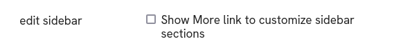

{kind=link}
| Summary | Kiosk has the look of a self-service terminal | |
| Repository | GitHub - nolosb/discourse-theme-kiosk | |
| New to Discourse Themes? | Beginner’s guide to using Discourse Themes |
Install this theme
{kind=link}
{kind=link}
{kind=link}
{kind=link}
Theme Features
-
Simple navigation
The theme drops most nested or complex navigation features -
Pick your favorites
Love this on a reddit-ish theme for Discourse and copied it as is Click a star icon to directly add a category or tag to the sidebar.
Click a star icon to directly add a category or tag to the sidebar.
Official Components
The theme builds on several official components:
-
Avatar Component
Resizes avatars and the header -
Header Search
Adds a Search field to the header -
New Topic Button
Replaces the default button with a persistent New Topic button on the header -
Dark-Light Toggle
Adds an icon to toggle color schemes.
Custom Components
It also uses two custom layout components:
-
Panels
Adds a panel layout around the main content container on all routes. -
Rounded
Rounds a lot of elements. A work in progress..
Tune the theme
Increase avatar sizes on the Avatar Component so they don’t render blurred. On my live site I’ve set sizes to
mediumand45.On the Rounded component you can smooth edges. On my live site I’ve set the default and button radius to
2px.By default the sidebar shows a flat list of links. Toggle this theme setting to show the More dropdown and customize sidebar sections. Only staff will see the dropdown:

Pick
Categories and featured topicsas your category style in admin settingsTo use a signage font you can install HK Grotesk as a component.
{kind=link}
{kind=link}